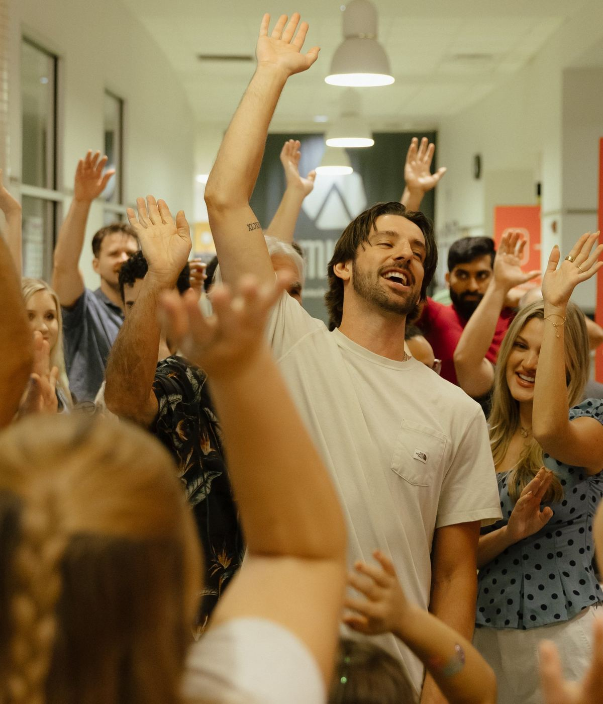
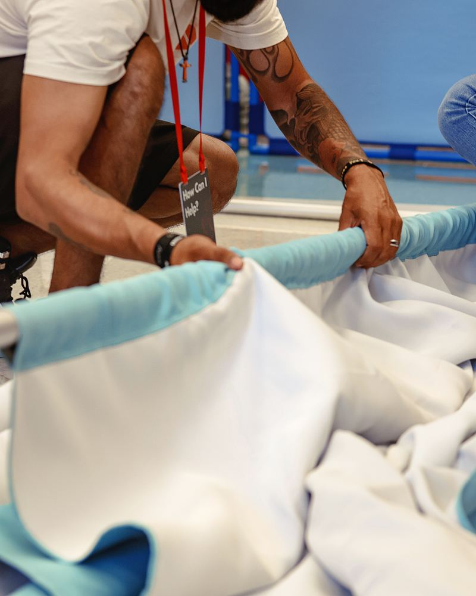
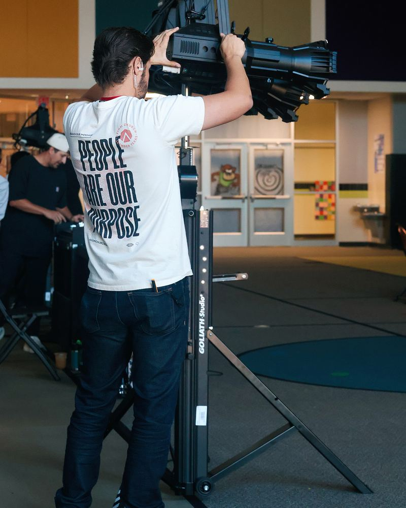
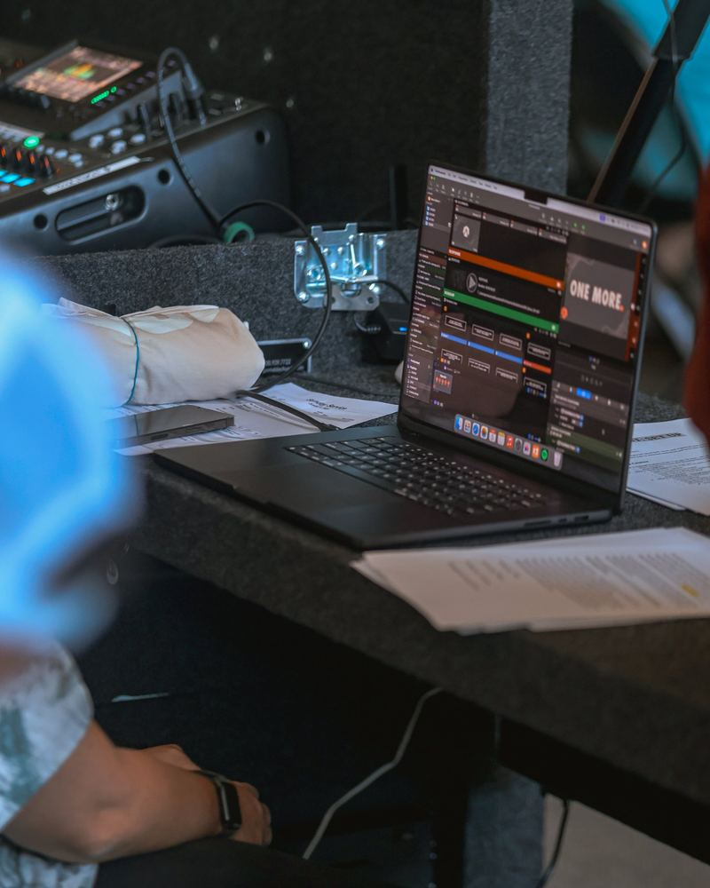
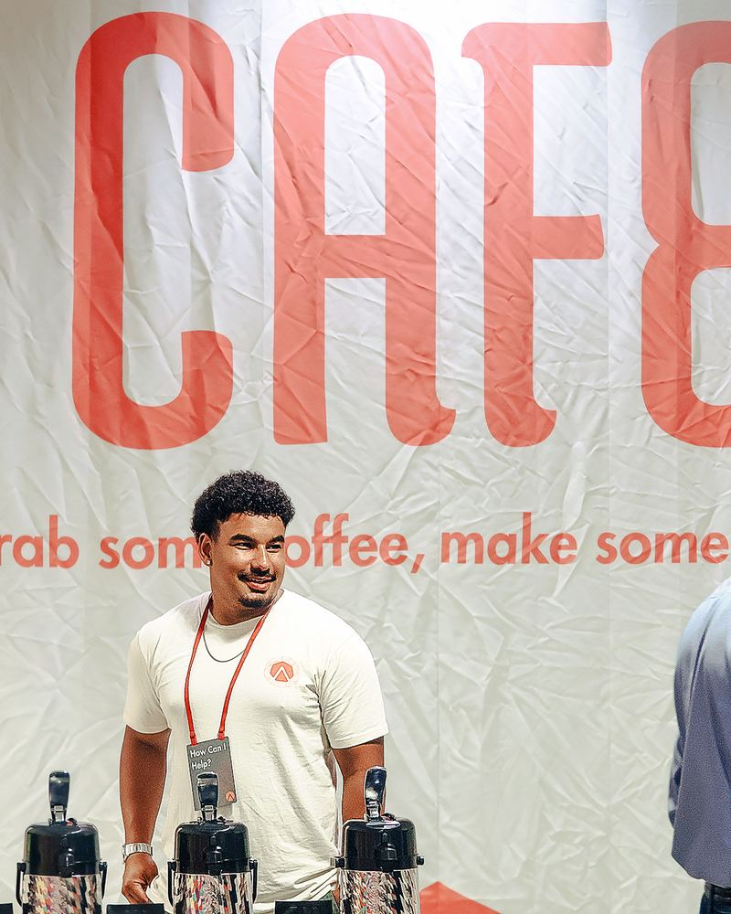
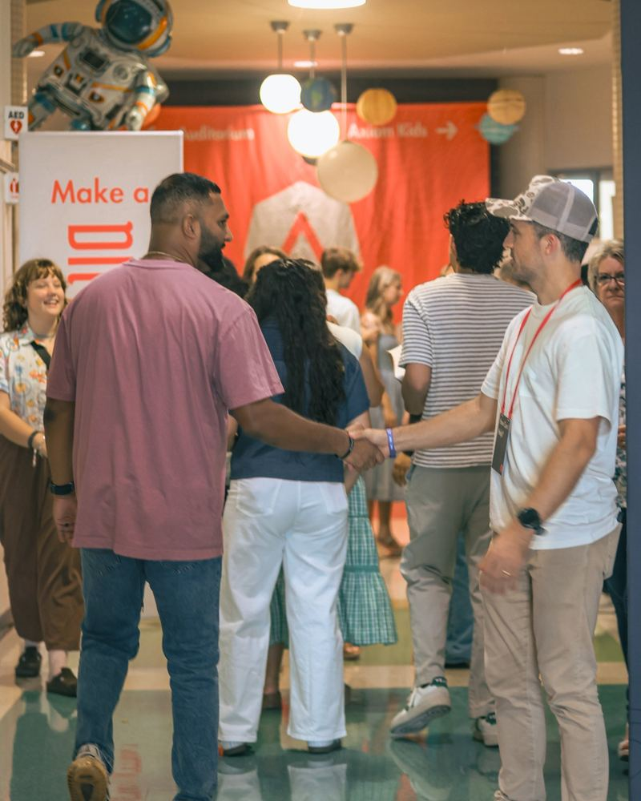
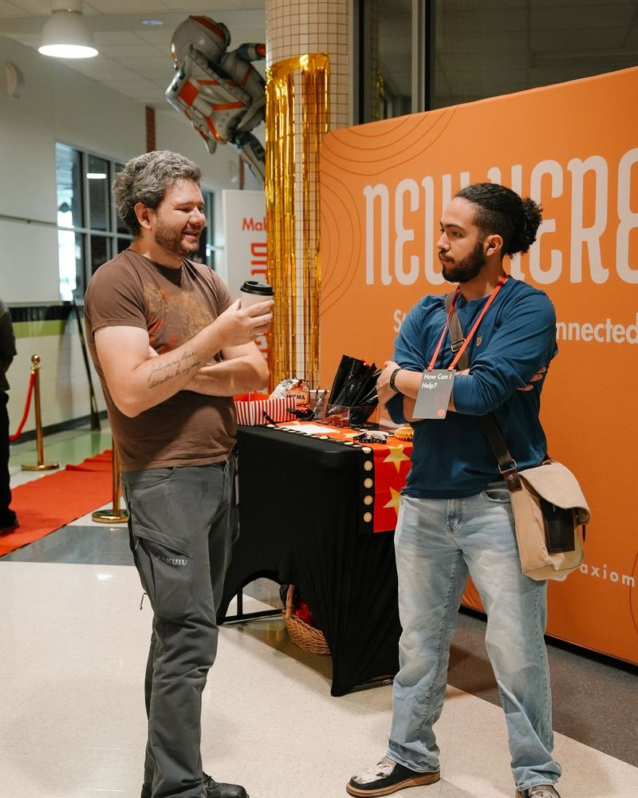
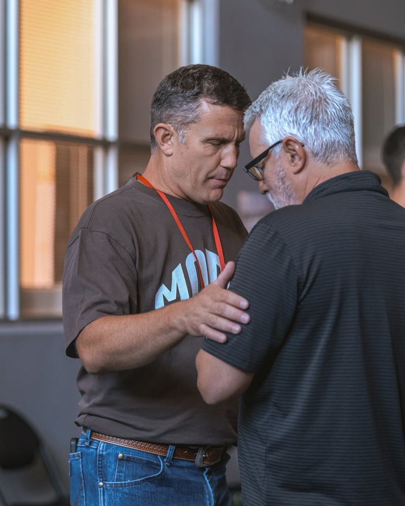
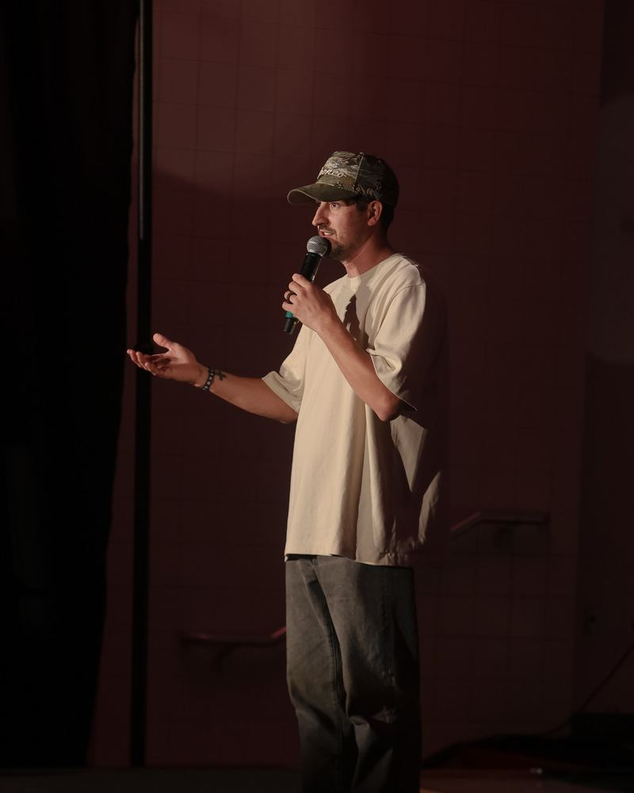
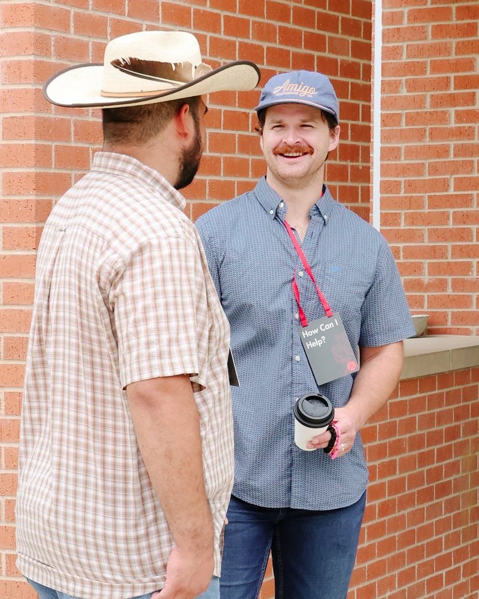

Join a team
Don’t fill a spot. Find a purpose.
See what a Sunday takes, then find where you fit.
One Sunday
It takes a lot of people to make Axiom happen.









Not sure where you fit?
See every team.
With people
- Welcome
You make a new place feel like home.
Join Welcome Team → - New Here
You look out for the new people and answer whatever they ask.
Join New Here Team → - Next Steps
You help people figure out what to do next around here.
Join Next Steps Team → - Cafe
You keep everyone awake and give a nervous person something to hold onto.
Join Cafe Team → - Outdoor Experience
You’re the first person anyone sees from the parking lot.
Join Outdoor Experience Team →
With kids
- Kids
You give kids a great hour, and their parents an hour to breathe. Background check, onboarding call, in-person training.
Join Kids Team → - Kids Welcome
You check families in and walk them to the right room, so no parent is lost.
Join Kids Welcome Team →
Behind the scenes
- Set-Up
You turn a school into a church.
Join Set-Up Team → - Tear Down
You pack it all up so the school gets its building back.
Join Tear Down Team → - Trailer
Nothing happens until the trailers show up. You’re the first one here. You need to have driven a truck and trailer.
Join Trailer Team → - Production
If the sound and slides work, nobody notices. But nobody noticing means you are doing it right.
Join Production Team → - Food
You feed the people who got here before everyone else. You will be a hero.
Join Food Team → - Events
You plan the parties and nights out that turn strangers into friends.
Join Events Team →
Leading and covering
- Worship
You lead the room in the songs. People came to sing, and you make it easy. Audition, onboarding call, in-person training.
Join Worship Team → - Prayer
Before anyone arrives, you pray for the people who are going to arrive later. Onboarding call, in-person training.
Join Prayer Team → - Security
You watch the doors and the room so nobody else has to think about it. Background check.
Join Security Team →
Which teams have extra steps?
Most teams, you just show up and we train you. Five have one more step:
- Kids: a background check, an onboarding call, then in-person training.
- Security: a background check.
- Worship: an audition, an onboarding call, then in-person training.
- Prayer: an onboarding call, then in-person training.
- Trailer: you need to have driven a truck and trailer before.
Is it all on Sunday mornings?
Almost all of it. Events happens during the week, and Prayer runs through the week too.
How often would I serve?
As often as works for you. Not everyone can serve every week, and we know that. The more you serve, the more you’ll get out of it. But you set the pace, and we trust you to manage your own burnout.
What happens after I sign up?
Someone from the team reaches out. That’s it. You fill out the form, and a real person gets back to you.
Do I have to believe what you believe?
No. You can serve while you’re still figuring it out. The one exception is some roles with kids, and we’ll talk that through with you.